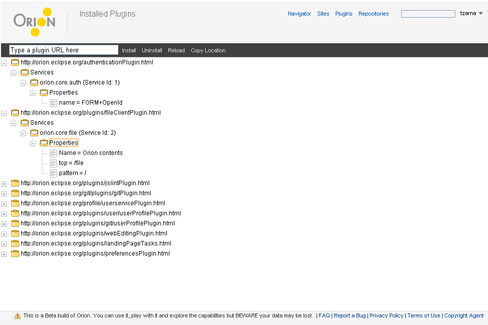

<map name="map">
	<area shape="rect" coords="558,15,625,41" href="navigator.html" />
	<area shape="rect" coords="628,17,658,40" href="sites.html" />
	<area shape="rect" coords="662,17,707,39" href="plugins.html" />
	<area shape="rect" coords="710,16,780,37" href="git-repositories.html" />
</map>
